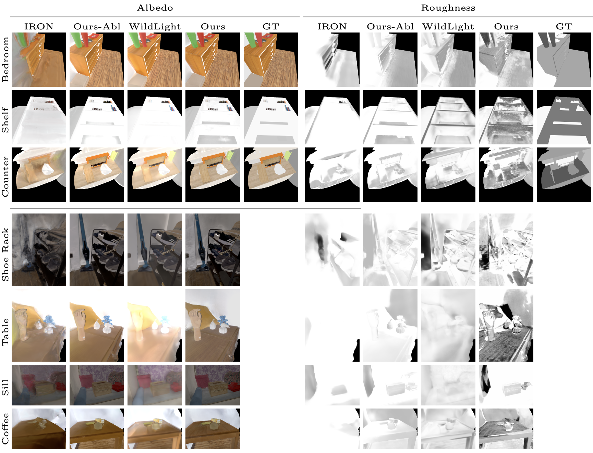

Our method produces significantly better geometry than IRON on synthetic (left) and real data (right). Compared to WildLight we produce slightly better geometry on synthetic data (left) and significantly better on real data (right).
In this paper, we present GaNI, a Global and Near-field Illumination-aware neural inverse rendering technique that can reconstruct geometry, albedo, and roughness parameters from images of a scene captured with co-located light and camera. Existing inverse rendering techniques with co-located light-camera focus on single objects only, without modeling global illumination and near-field lighting more prominent in scenes with multiple objects. We introduce a system that solves this problem in two stages; we first reconstruct the geometry powered by neural volumetric rendering NeuS, followed by inverse neural radiosity NeRad that uses the previously predicted geometry to estimate albedo and roughness. However, such a naive combination fails and we propose multiple technical contributions that enable this two-stage approach. We observe that NeuS fails to handle near-field illumination and strong specular reflections from the flashlight in a scene. We propose to implicitly model the effects of near-field illumination and introduce a surface angle loss function to handle specular reflections. Similarly, we observe that NeRad assumes constant illumination throughout the capture and cannot handle moving flashlights during capture. We propose a light position-aware radiance cache network and additional smoothness priors on roughness to reconstruct reflectance. Experimental evaluation on synthetic and real data shows that our method outperforms the existing co-located light-camera-based inverse rendering techniques. Our approach produces significantly better reflectance and slightly better geometry than capture strategies that do not require a dark room.
Our method produces significantly better geometry than IRON on synthetic (left) and real data (right). Compared to WildLight we produce slightly better geometry on synthetic data (left) and significantly better on real data (right).
We present estimated albedo, and roughness in validation views for the synthetic scenes (row 1-3) and real scenes (row 4-7). Our method produces significantly better albedo, roughness and re-rendering w.r.t. IRON due to our ability to better model near-field and global illumination.
We show videos features our scenes with ambient lighting with moving point light sources and cameras to demonstrate the practical applications of our method on re-rendering.
@article{GaNI,
author = {Wu, Jiaye and Hadadan, Saeed and Lin, Geng and Zwicker, Matthias and Jacobs, David and Sengupta, Roni},
title = {GaNI: Global and Near Field Illumination Aware Neural Inverse Rendering},
journal = {COPR},
year = {2024},
}